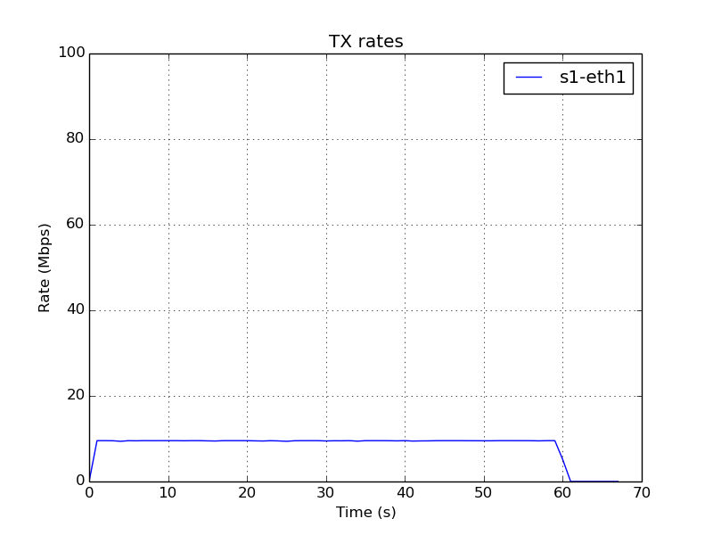
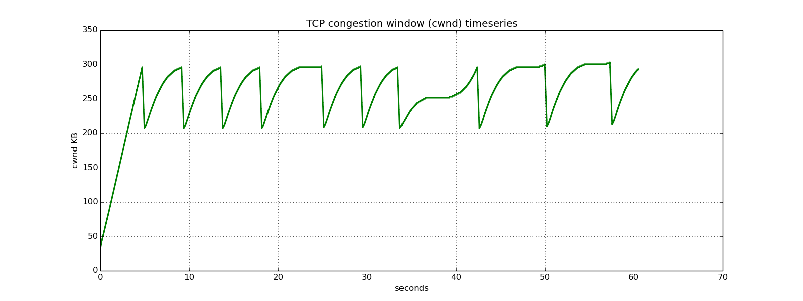

My experience prototyping network topologies using Mininet
But what is 'Mininet'?
Mininet is a software emulator to prototype a network of any size on a single machine. It allows users to simulate a network topoloy through code. For this project, I used the Python API of the software, although it is possible to find it in C++ and Java versions as well. You can find the Python API documentation here here.
Constructing New Topologies
It is super straightforward to construct new topologies in mininet. Each link, router and host has a one-liner syntax that can take arguments for various properties. For example, a host can be added using this simple two-liner:
hostConfig = {'cpu': cpu}
h1 = self.addHost('h1', **hostConfig)
Similarly, a link can be added between two switches using this two-liner:
linkConfig1 = {'bw': 10, 'delay': '6ms', 'loss': 3, 'max_queue_size': max_queue_size }
self.addLink(s1, s2, **linkConfig1)
Following a similar syntax, we define the following topologies:
 A Simple topology
A Simple topology
 A Complex topology
A Complex topology
Playing with Bandwidth Argument
Since we have two topologies, now it is time to play around with the link arguments to see how network characteristics respond to our changes. We first begin by playing with bw argument in the link configuration as shown in the above code. Changing its value from 10 to 50 changes the generated transfer rate graph between sender and receiver as follows:


It is cool to see our changes are accurately reflected in the simulated topologies and which would mean that the possibilities for such experimentation are endless. Let us observe how the simulated congestion-window changes throughout the transmission.

As we can see, the graph clearly follows TCP cubic (with a multiplicative decrease factor close to 0.7) behavior often hitting the bandwidth limit before running into 3dup ACKs. This closeness of this graph to real-life TCP CUBIC graphs depicts the accuracy of Mininet emulation on various levels of abstraction, proving that it is a strong tool to emulate various network phenomenon.